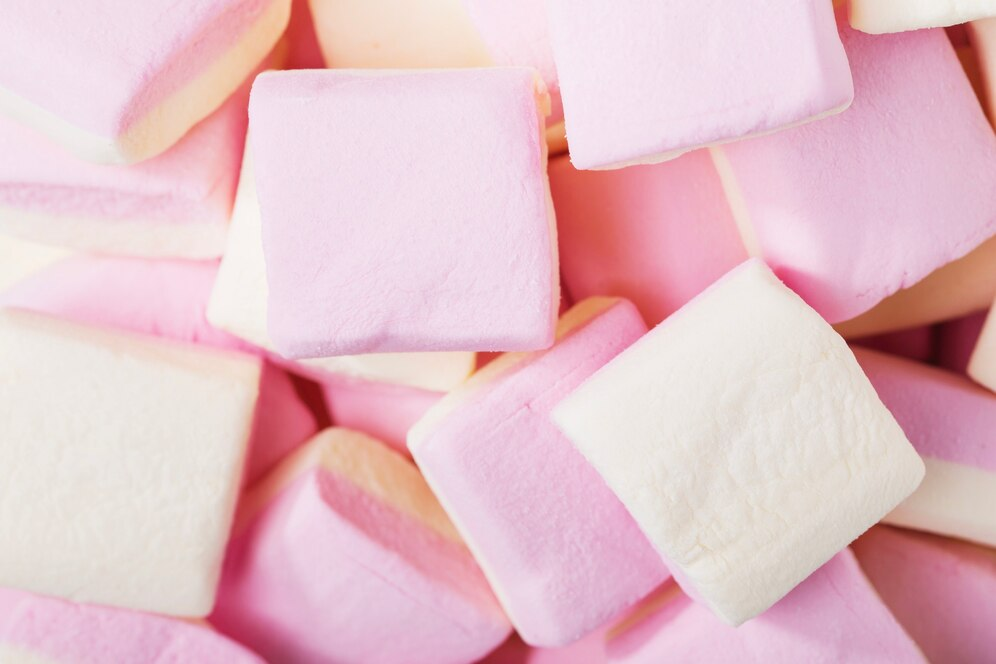

Ingredientes:
- 3 claras de ovo
- 1 xícara de açúcar
- 1/2 xícara de água
- 1 colher (chá) de essência de baunilha
- 1/2 colher (chá) de gelatina em pó sem sabor
- Açúcar de confeiteiro para polvilhar
Modo de Preparo:
- Preparar a Gelatina
Em uma pequena tigela, coloque a gelatina em pó e adicione a água. Deixe hidratar por 5 minutos.
- Bater as Claras
Em uma batedeira, bata as claras até que fiquem em neve. Quando as claras estiverem firmes, adicione o açúcar aos poucos, sem parar de bater, até formar um merengue brilhante e firme.
- Derreter a Gelatina
Leve a tigela com a gelatina hidratada ao micro-ondas por cerca de 10 segundos, ou até que ela fique completamente líquida.
- Incorporar a Gelatina
Com a batedeira ligada, adicione a gelatina derretida à mistura de claras, batendo constantemente até que a mistura fique bem firme e homogênea.
- Adicionar Baunilha
Acrescente a essência de baunilha e bata por mais 1 minuto para incorporar.
- Modelar o Marshmallow
Transfira a mistura para uma forma untada com um pouco de óleo e polvilhada com açúcar de confeiteiro. Alise a superfície com uma espátula.
- Deixar Secar
Deixe o marshmallow descansar em temperatura ambiente por cerca de 6 horas, ou até que esteja firme o suficiente para ser cortado.
- Servir
Após o tempo de descanso, retire o marshmallow da forma e corte em quadrados ou no formato desejado. Polvilhe com mais açúcar de confeiteiro para não grudar.
- Dica
Você pode adicionar corante alimentício para dar um toque colorido ao marshmallow, ou até mesmo misturar essências de outros sabores como morango ou coco!